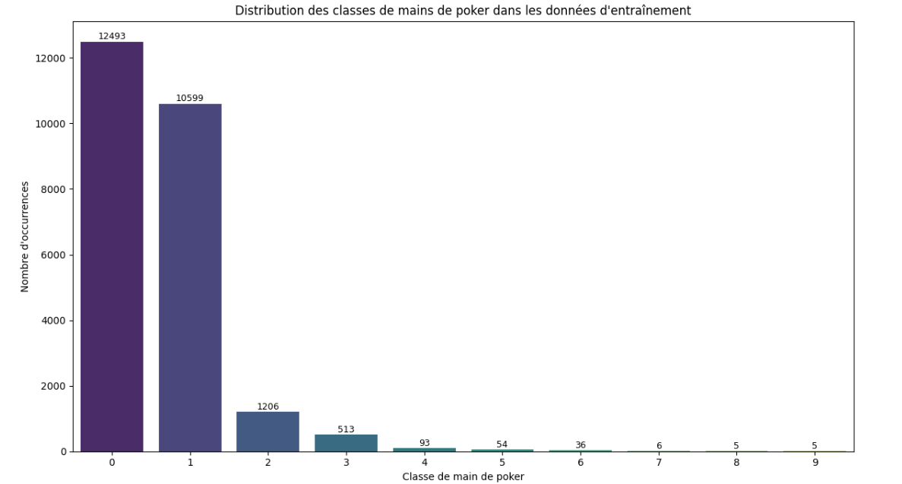
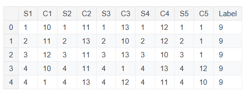

Chapitre 3 : Ingénierie et Optimisation du Modèle
Ce chapitre quitte la théorie pour aborder la réalité technique du Model Engineering. L'accent est mis sur les réseaux de neurones, où l'architecture et la gestion des poids deviennent prépondérantes.
Les axes clés
- Ingénierie de l'entraînement : Stratégies de Transfer Learning, gestion des checkpoints et optimisation des taux d'apprentissage.
- Stabilité et Robustesse : Maîtrise de la généralisation via la régularisation (Dropout, Early Stopping) et la lutte contre le sur-apprentissage.
- Validation et Fiabilité : Protocoles d'évaluation rigoureux et choix des métriques adaptées aux contraintes métiers réelles.
L'ensemble des démonstrations techniques et le contenu détaillé de ce chapitre sont accessibles directement dans le Notebook Colab associé.

Challenge ML : « Beyond the Overfit »
Pour mettre en pratique les concepts de Model Engineering, vous participerez à une compétition de classification sur le UCI Poker Hand Dataset. L'objectif est de construire un modèle "Réseaux de Neuronnes" capable de généraliser sur des combinaisons de cartes jamais vues, malgré un fort déséquilibre des classes (allant de la simple "paire" à la rarissime "quinte flush royale").

1. Préparation et Compréhension des Données
Chaque enregistrement est un exemple d'une main composée de cinq cartes à jouer tirées d'un jeu standard de 52 cartes. Chaque carte est décrite à l'aide de deux attributs (l'enseigne et le rang), pour un total de 10 attributs prédictifs. Il existe un attribut de classe qui décrit la "Main de Poker".
Structure des caractéristiques (10 features) :
Pour chaque carte i (de 1 à 5) :
- Si (Suit) : L'enseigne de la carte, encodée de 1 à 4 {Cœur, Pique, Carreau, Trèfle}.
- Ci (Rank) : Le rang de la carte, encodé de 1 à 13 {As, 2, 3, …, Reine, Roi}.
Classes cibles (Labels 0 à 9) :
Le modèle doit prédire la main finale, allant de 0 (Rien en main) à 9 (Quinte Flush Royale).

Vous pouvez télécharger le jeu de données directement via ce lien : Télécharger poker-hand-training-true.data
Configuration de l'environnement :
Pour garantir la compatibilité avec l'Arena, il faut avec les spécifications suivantes :
- Python : 3.10, 3.11 ou 3.12
- PyTorch :
2.10.0 - NumPy :
1.26.4
Voici le code pour charger votre environnement :
import os
import pandas as pd
import torch
from torch.utils.data import DataLoader, TensorDataset
# Configuration du chemin et lecture du fichier
path = "./"
train_file = os.path.join(path, 'poker-hand-training-true.data')
# Définition des colonnes : S1, C1, S2, C2, ..., S5, C5 + hand
columns = [f'{attr}{i}' for i in range(1, 6) for attr in ['S', 'C']] + ['hand']
df_train_full = pd.read_csv(train_file, names=columns)
# Séparation Features / Target
X_train_raw = df_train_full.drop('hand', axis=1)
y_train_raw = df_train_full['hand']
# Conversion en Tenseurs PyTorch (sans normalisation ni tri)
train_dataset = TensorDataset(
torch.FloatTensor(X_train_raw.values),
torch.LongTensor(y_train_raw.values)
)
# DataLoader pour l'entraînement
train_loader = DataLoader(train_dataset, batch_size=128, shuffle=True)2. Export (TorchScript)
Après avoir optimisé votre architecture (Réseaux de Neuronnes), exportez votre modèle via torch.jit pour qu'il soit sérialisé et prêt pour
l'évaluation :
# Passage en mode évaluation et export obligatoire
model.eval()
example_input = torch.rand(1, 10)
traced_script_module = torch.jit.trace(model, example_input)
traced_script_module.save("poker_model_jit1.pt")
print("Modèle exporté avec succès : poker_model_jit1.pt")3. Soumission à l'Arena
Une fois votre fichier .pt généré, téléversez-le sur la plateforme :
https://challenge-ml.streamlit.app/
- Métrique : Votre performance sera jugée sur le Macro F1-score.
- Limite : Vous avez droit à 5 tentatives au total.